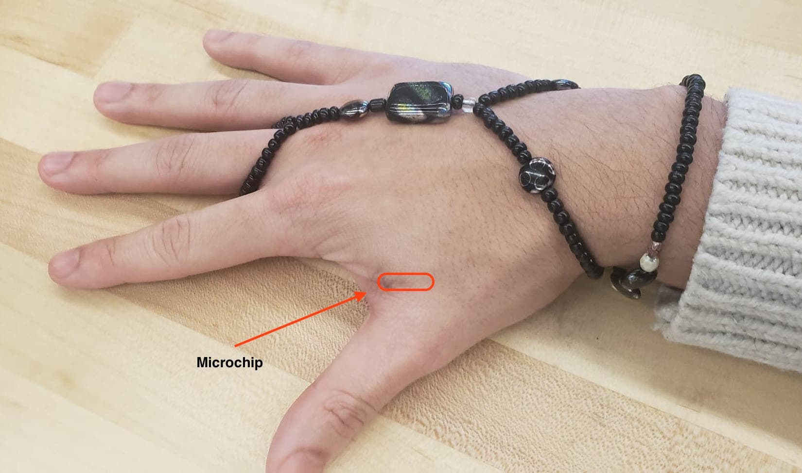

On January 26th, 2020, I got an RFID implanted into my hand.
There are various features I can do with it. If I scan it with my phone, it will go to my website. It can carry any information about me that I would like it to, and it can provide authentication for many RFID systems. I can even store an entire movie on it!
I plan to use it for more creative endeavors in the future. I am currently working on making a glove that can only be authenticated with my hand.
I did this because I believe in the power of technology to impact our lives in unimaginable ways, espeically to enhance human capabilities. I plan to get more body modifications and find new ways to "upgrade" myself.
